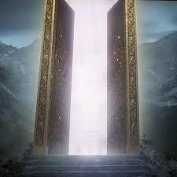
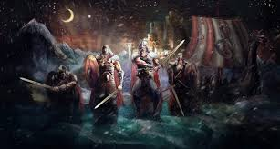
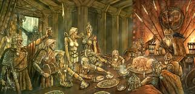
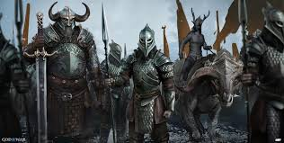

Entrada al Valhalla
El Valhalla, el glorioso salón de Odín en Asgard, es el lugar donde los guerreros más valientes, conocidos como *Einherjar*, son llevados tras su muerte en batalla. Las valquirias, las servidoras de Odín, eligen a los caídos dignos y los conducen al Valhalla para vivir una existencia eterna en honor y gloria.
La Vida de los Guerreros
En el Valhalla, los Einherjar pasan sus días entrenando y luchando entre sí para perfeccionar sus habilidades guerreras. Las heridas sufridas durante estos combates se curan mágicamente al final del día, permitiéndoles enfrentarse una y otra vez con renovada fuerza.
Los Banquetes Eternos
Por las noches, los guerreros disfrutan de festines interminables, donde consumen carne del jabalí mágico Sæhrímnir, que resucita cada día, y beben hidromiel servido por las valquirias. El Valhalla es un lugar de camaradería, donde los caídos celebran su valentía y preparan sus espíritus para la batalla final.
Preparación para el Ragnarök
El propósito último de los Einherjar es estar listos para luchar junto a Odín en el Ragnarök, la batalla final contra las fuerzas del caos. El entrenamiento diario y los banquetes fortalecen a los guerreros para enfrentarse al destino que les espera en el fin de los tiempos.
